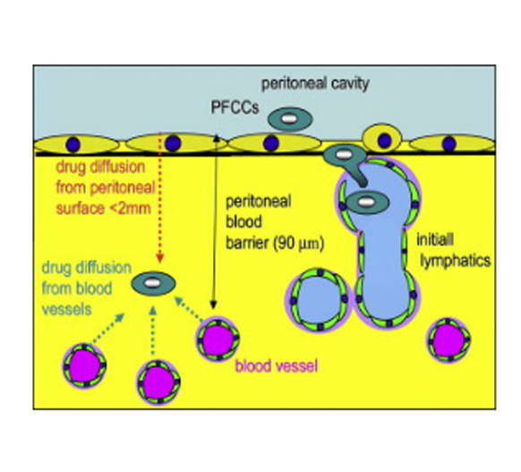
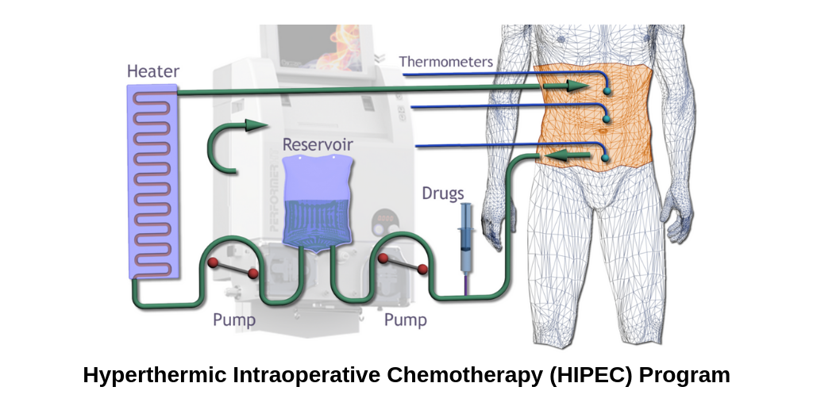
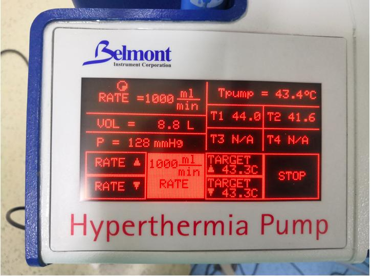

HIPEC (HEATED CHEMO BATH) -
New Armaterium in Cancer Treatment
Traditionally gastrointestinal cancer which had spread to the abdominal cavity lining (i.e Peritoneum) were treated with a nihilistic attitude and were considered stage 4. Their treatment has been like those of other metastatic solid tumours which include Intravenous chemotherapy. Treatment with IV chemotherapy for such patients with has yielded poor results with median survival being 6 to 9 months in the last decade and newer multi-modality chemotherapeutic regimens have at the most improved survival to the tune of 12 to 15 months.
So, does this principle of One shoe fit all for treating patients with cancer of the abdominal lining on lines of other metastatic solid cancers right? Or time has come to think of a tailormade solution for this group of disease.
Similar to Solid organ Metastasis ??

Plasma Peritoneal Barrier
We all know the abdominal lining has different physiology when compared to other solid organs in the body which harbour metastatic cancer cells. The main difference is in their blood supply. In solid organs where blood supply is rich and can attain higher concentration of chemotherapeutic drugs on other hand the abdominal lining has got a plasma peritoneal barrier which restricts the diffusion of drugs across the barrier resulting in a lower concentration of drugs at these sites leading to poor results.
To overcome this plasma and the abdominal lining barrier came the concept of Intra peritoneal chemotherapy where the chemotherapy solution is directly given inside the abdomen at the time of surgery or after surgery. The chemotherapy cells act on the microscopic cancer cells present on the abdominal lining and killing them effectively while the plasma – peritoneal barrier prevents absorption of drug into the circulation reducing the side effects of the drug as compared to conventional intravenous chemotherapy. This gives us an advantage to use large doses of chemotherapy inside the abdominal cavity with less chances of complications.
Adding Heat to the chemotherapy solution enhances the killing power of the drug and increases potency of the treatment. During this novel technique of Heated intraperitoneal chemotherapy (HIPEC) we circulate chemotherapy at a temperature of 43 degrees for a period of 60 to 90 minutes.


Currently HIPEC can be used for the following conditions:
A recently published article in the New England Journal of medicine has shown benefit of adding HIPEC to standard treatment of stage 3 Ovarian cancers at the time of cyto reductive surgery which increase the overall survival by 12 months. Similarly, many studies in peritoneal cancers of Colorectal origin have shown improvement in overall survival with HIPEC as compared to the standard intravenous chemotherapy.
Hyperthermic Intraoperative Chemotherapy (HIPEC) is always combined with cytoreductive surgery where first all the seen disease in the abdomen is removed through an open incision or through a key hole technique in feasible patients with low disease load. After complete disease removal the heated chemotherapy is circulated in the abdomen at a temp of 43 degrees for a period of 60 to 90 minutes. The idea behind this approach is that all visible tumour is removed and any small, microscopic residual disease which is not seen by the eyes is taken care by the circulating chemotherapy in the abdomen. Another form of Intra peritoneal chemotherapy is Piped aerosol form which is called as PIPEC and used for those patients who have unresectable peritoneal disease in the abdomen and the chemotherapy is given to either control the growth of the disease or reduce the volume of the disease.